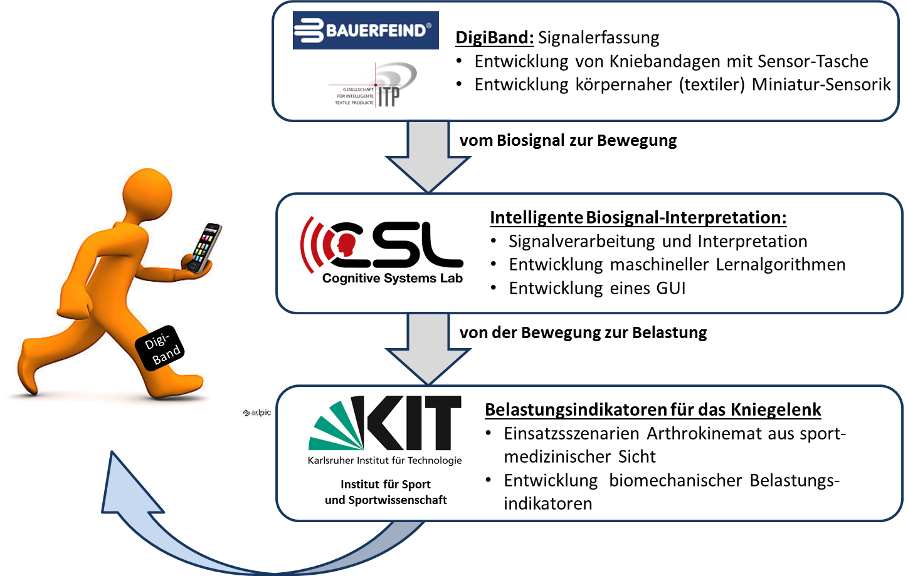
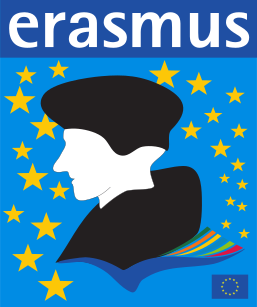
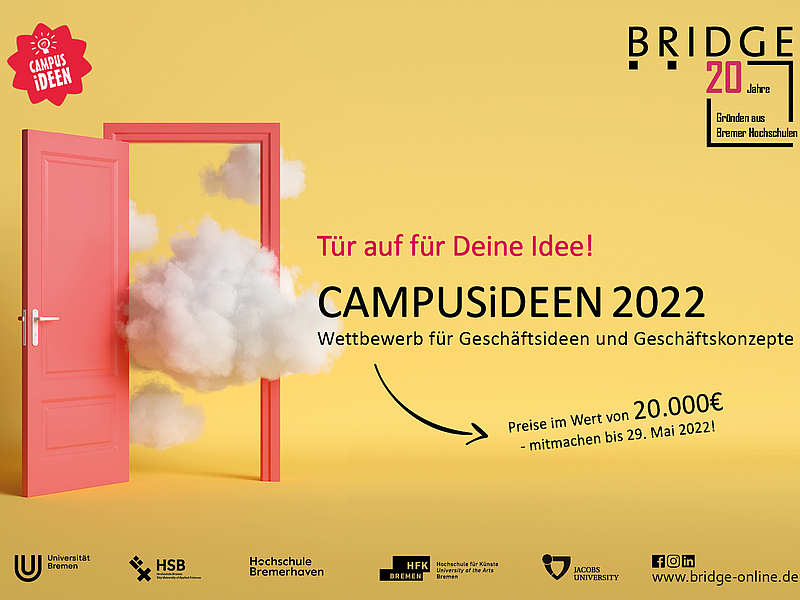
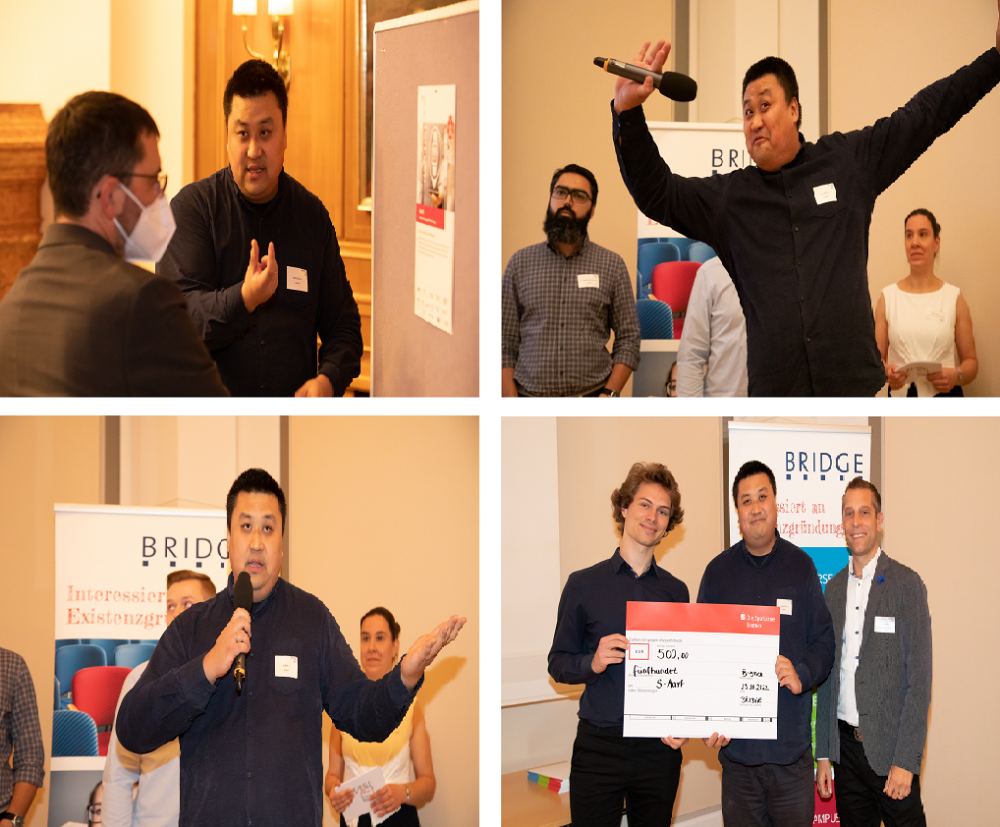

Links
|
|
Homepage @Universität Bremen |
| 0000-0002-6850-9570 | |
| GyLOsRwAAAAJ | |
| Hui-Liu-149 | |
| 57196004640 | |
| 2146672447 | |
| ACZ-9903-2022 | |
|
Your contribution is welcome: Sensors for Human Activity Recognition (Vol. II) |
|
Research Aspects
| Biomedical Engineering (BME) |
● Rehabilitation assistance ● Arthritis and knee bandage ● Mobile phone application for auxiliary medical care |
| Wearables |
● (Wireless) Body Sensor Network (WBSN/BSN) ● Body Area Network (BAN) ● Inertial sensors and Inertial Measurement Units (IMU) ● Electromyography (EMG), electrogoniometers (EGM), and other sensors ● Ubiquitous/pervasive computing ● Facial EMG (fEMG) and Action Unit Recognition (AUR) |
| Digital Signal Processing (DSP) |
● Multisensorial and multichannel biosignal processing ● Preprocessing and feature extraction ● Time series processing ● Open-source time series feature extraction library ● Biosignals and user interfaces |
| Big Data Mining (BDM) Information Retrieval (IR) |
● Multimodal data visualization ● Statistical analysis ● Organization, operation, and post-processing of big data acquisition ● Automatic and semi-automatic segmentation and annotation ● Open-source human activity dataset sharing ● Open-source subsequence search library ● Self-similarity matrix (SSM) and novelty search |
| Machine Learning (ML) Artificial Intelligence (AI) |
● Feature selection and feature space reduction ● Early fusion and late fusion ● Hidden Markov Model (HMM) ● CNN, RNN, and ResNet ● Model training, decoding, and evaluation |
| Human Activity Recognition (HAR) |
● Human Activity Recognition Research Pipeline: HAR-Pipeline ● Advanced human activity modeling: Motion Units ● HAR Software development: Activity Signal Kit (ASK) ● Mobile HAR Interface development: ASK MobilE (ASKME) ● Real-time end-to-end HAR system: ASK Echtzeit-Dekoder (ASKED) ● On-the-fly HAR add-on: ASK Plug-and-PlAy (ASKPAPA) ● Internal sensing and wearable computing for HAR |
| Metaverse Virtual/Augmented Reality (VR/AR) Mixed/Extended Reality (MR/XR) |
● VR/AR/MR Game development for rehabilitation assistance: ASK Game Enginer (AGE) ● Multimodal biosignal acquisition and application in metaverse ● Control and interaction in MR/XR ultilizing wearables |
| Music Information Retrieval (MIR) |
● Feature extraction of melody pitch statistics ● MIR-based amateur singing assistance ● Co-processing of pitch statistics and audio signals |
|
(Alternative source, downloadable: Developed the first intelligent knee bandage recognizing human activities in real-time to assist rehabilitation Best Paper Award (Student Author) of  12th International Joint Conference on Biomedical Engineering Systems and Technologies
12th International Joint Conference on Biomedical Engineering Systems and Technologies | |
Publications
Academic Contributions and Activities
| Guest Editor |
● |
| Editor |
● Frontiers in Behavioral Neuroscience |
| Editorial Board |
● Frontiers in Big Data ● Frontiers in Artificial Intelligence |
| Conference Program Chair |
● BIOSIGNALS2024 - 17th International Conference on Bio-Inspired Systems and Signal Processing (in BIOSTEC 2024), Rome, Itaty |
| Conference Session Chair |
● 15th International Conference on Health Informatics (in BIOSTEC 2022), Vienna, Austria ● 19th International Conference on Signal Processing and Multimedia Applications, Lisbon, Portugal ● 16th International Joint Conference on Biomedical Engineering Systems and Technologies, Lisbon, Portugal |
| Reviewer |
● For over 20 journals, including Nat. Commun., Biomed. Signal Process. Control, Remote Sens., Front. Physiol., Front. Med., Physiol. Meas., ISPRS Int. J. Geo-Inf., Biomimetics, and Biosensors ● For various conferences, including IEEE BSN, BHI; ACM ICMI, ISWC, AUTOMOTIVEUI; ITP ● IOP Trusted Reviewer in recognition of an exceptionally high level of peer review competency |
|  Arthrokinemat (2016 — 2019) |
● Project Facilitator and Researcher ● Federal Ministry for Economic Affairs and Climate Action, Germany (BMWi) ● Development of a learning, adaptive, sensor-based measurement system to prevent arthrosis activation when the knee joint is overloaded |
 NF-BWB (2023 — 2025) |
● Project Facilitator and Researcher ● Bremen Securities Exchange Foundation (BWB) ● Promoting young talents: big data and AI popularization and competition in high schools |
 IntEL4CoRo (2021 — 2025) |
● Project Facilitator and Researcher ● Federal Ministry of Education and Research, Germany (BMBF) ● Interactive Learning Environment for Cognitive Robotics |
 ETAP (2022 — 2025) |
● Project plan participant ● Federal Ministry of Health, Germany (BMG) ● Evaluation of semi-automated care processes in long-term care using AI-based activity monitoring |
Young European Research Universities Network |
● YERUN Research Mobility Awards (YRMA) |
Universidade Nova de Lisboa Lisbon, Portugal |
●  Erasmus Teaching Staff Mobility |
 Biosignals Notebooks |
● Online Sensor-based AI Tutorial & Code Sharing |
Verein der CDHAW-Absolventen und Mitglieder der Tongji-Universität Düsseldorf, Germany 2018 |
● Invited Speaker: Academics and Art |
Karlsruher Institut für Technologie KD2school Adaptive Systems Talks Karlsruhe, Germany 2022 |
● Invited Workshop Speaker |
Prague, Czech 2019 |
● Tutorial: From Offline towards Real-Time |
 4th Bremen Big Data Challenge BBDC 2019 |
● Big data acquisition, processing, and provision (individually) ● More than 60 teams from north German universities participated in the final round |
Industry-Oriented Scientific Activities
Bremen, Germany 2019 |
● Demonstration of real-time human activity recognition ● Demonstration of MR game platform for rehabilitation assistance ● @ Fraunhofer Institute for Digital Medicine (MEVIS) |
|
Bremen, Germany 2021 |
● Demonstration of intelligent knee bandage ● @ Übersee-Museum Bremen |
|
PLUX Wireless Biosignals S.A. |
● Scientific Consultant | |
|  CAMPUSiDEEN 2022 Business Idea Competition |
● Public Choice Award  |
Professional Preparation
 2001 — 2004 Shixi High School |
● Senior High School ● 1st Prize of the National Olympiad in Informatics in Provinces (NOIP'94) [Certificate No. I030473] ● 1st Prize of Shanghai High School Programming Competition (CASIO Cup) |
 2004 — 2007 School of Electronic Information and Electrical Engineering Shanghai Jiao Tong University Major: Information Engineering |
● Bachelor ● Scholarship of Shanghai Jiao Tong University (three years) |
 2007 — 2009 Faculty IV: Electrical Engineering and Computer Science Technische Universität Berlin Major: Communication Systems Major: Quality and Usability Supplementary: Computer Vision |
● Diplom-Ingenieur ● Average course score：1.0 ● Student research assistant @  Fraunhofer Institute for Telecommunication, Heinrich Hertz Institute Fraunhofer Institute for Telecommunication, Heinrich Hertz Institute
|
|
2009 — 2011 School of Electronic Information and Electrical Engineering Shanghai Jiao Tong University Major: Communication and Information System |

 ● Master of Science ● GPA：3.16/3.3 ● Ranking：1/102 ● First-class National Fellowship |
2012 — 2013 Technische Universität Berlin |
● Research Assistant ● The President's Scholarship of Technische Universität Berlin |
 2014 — 2016 In Industry |
● Software Engineer ● Responsible for integrated development projects |
|
2016 — 2021 Cognitive Systems Lab (CSL), Faculty 3: Mathematics and Computer Science, Universität Bremen |
● In charge of the BMWi project Arthrokinemat ● Developed the first intelligent knee bandage recognizing human activities in real-time to assist rehabilitation ● Best Paper Award (student author) ● Established extensive and close research cooperation with Institute of Sports and Sports Science ,  , among others , among others● Obtained a PhD of Engineering in 2021 |
|
From 2021 Universität Bremen |
● Postdoctoral Researcher |
Teaching Experience
|
From 2022 Hot Topics in Sensors and Human Activity Research (EN/DE) |
● Course provider ● Seminar instructor |
|
From 2022 Selected Topics of Cognitive Systems (DE) |
● Cooperative teaching ● Seminar instructor |
|
From 2017 Biosignals and User Interfaces (DE) |
● Organization of E-teaching; part of teaching tasks ● Exercise courses; online and offline Q&A ● Exam proposition; oral exam committees ● Virtual teaching activities in the pandemic |
|
2020 — 2021 Machine Learning Basics (EN) |
● Cooperative teaching ● Responsible for clustering analysis and clustering algorithm ● Online lecture video preparation in the pandemic |
|
2020 — 2021 Bachelor Project: RobARinth (DE) |
● Instructing project practice, including biodevice technology |
|
2016 — 2018 Software-Projekt II (DE) |
● Teaching and advising software design ● Instructing group practice ● Accompanying user conferences to formulate requirements ● Guiding programming and reviewing development |
|
2010 — 2011 Basic Theory of Circuits (EN/DE) |
● Teaching Assistant |
| Selected Supervised Master and Bachelor Theses: |
| My Supervised Students and Research Assitants |
 Hui's research group (partially) 2023 |